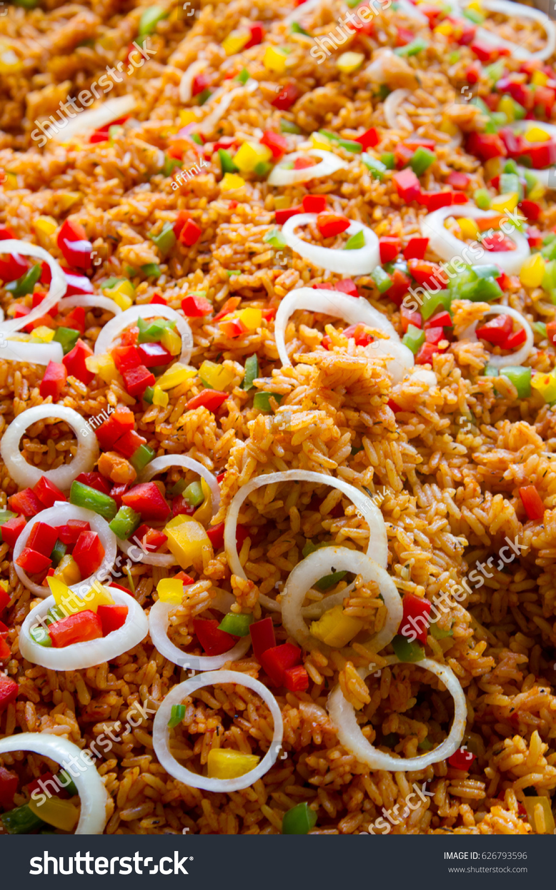

Benachin

Description
Benachin is also known as jollof rice. It literally translates to one pot in the wollof language. It is a hugely popular dish in west africa, with each country priding itself on having the best benachin. It is rich and delicious, and extremely satiating.
It can also have a wide range of nutritional values as it usually contains a lot of vegetables and protein.
Ingredients
Habanero chili
Onions
Garlic
2 thumb sized ginger
1 tsp fennel seeds
1/2 tsp black pepper
1 tsp salt
Bouillon seasoning according to taste
4 scallions
1 cup parsley
Cassava/yuca
Green and red bell peppers
8 cups broken jasmine or basmati rice or regular rice
Fish or meat of choice
Oil for frying
Tomatoes
Tomato paste
Steps
Clean and cut your vegetables. Blend onions, garlic, ginger, a chilli, a bouillon seasoning cube and tomatoes together. Set aside.
Clean your fish or meat. Season fish with salt and pepper. If using meat, season with salt, pepper and bouillon seasoning.
Heat some oil in a pan. Fry fish till golden brown. If using meat, do the same, frying till it has a crispy brown layer.
Fry blended mixture in same oil fish/meat was fried in.
Add tomato paste and fry till cooked.
Add vegetables of choice, the fish/meat, habaneros(to your liking),bouillon cube and enough water to fully submerge everything.
Cook until vegetables are soft. Remove them when soft. Remove the fish/meat as well when done. Whichever one is done first gets removed first.
Wash the rice and add to the pot. Cover with lid
Cook on low heat for about 10 minutes.
Remove lid and stir rice. Cover with lid again and let it cook on low heat for about 20 more minutes or till the rice is soft and fluffy.
Assemble the dish. Put rice on a plate, add vegetables and fish/meat and voila, you can dig in.